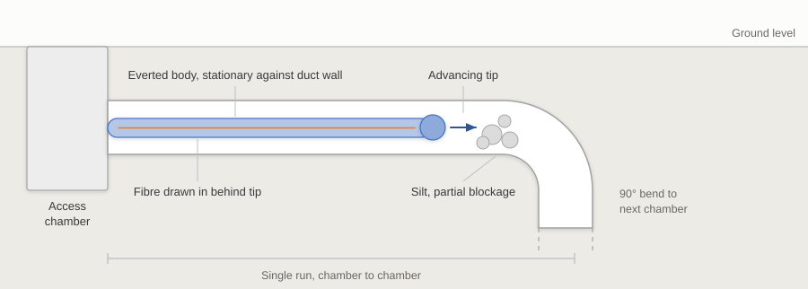
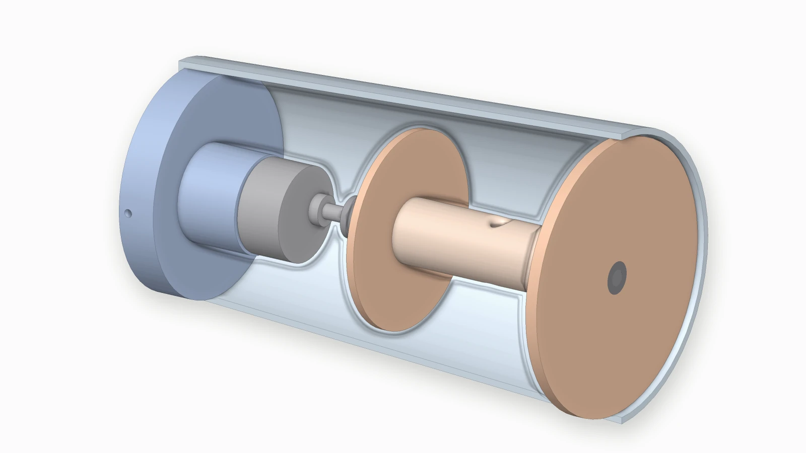
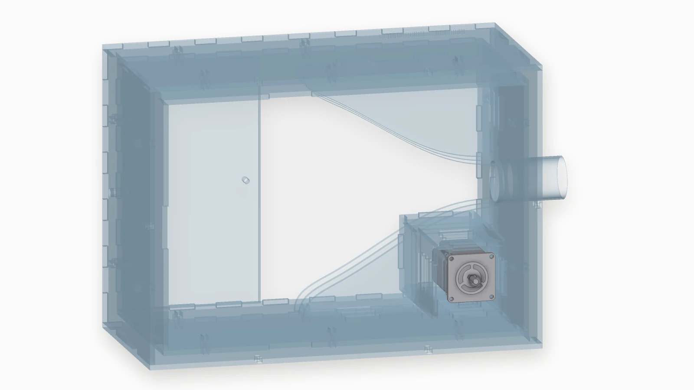
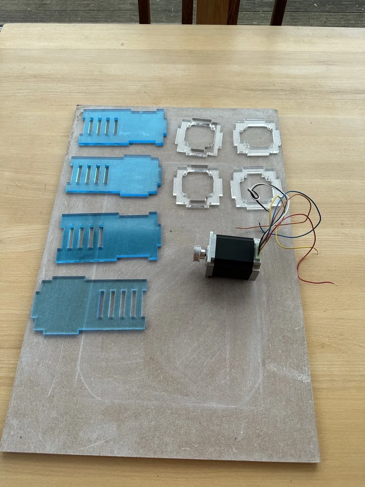
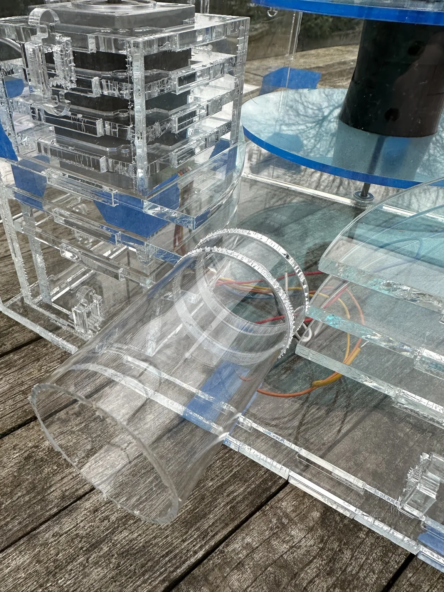
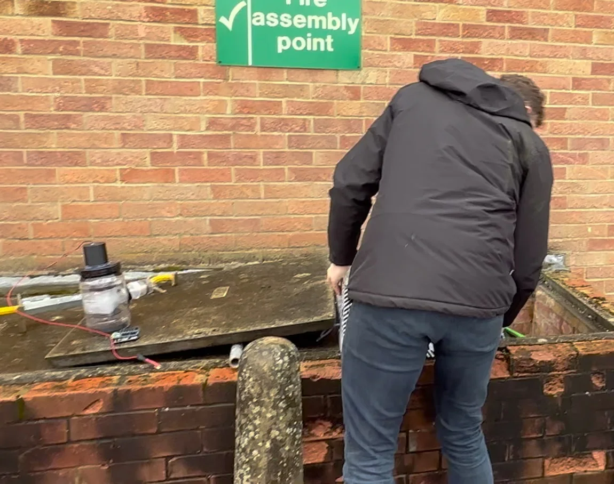

Soft robotics
A soft robot that installs fibre through buried duct
Laying fibre-optic cable into existing underground duct is slow, and the ducts are rarely clear. We built a soft robot that everts its way along them instead.

The problem
A telecoms group with a fibre rollout to deliver has a lot of duct already in the ground, and reusing it is far cheaper than digging. The catch is that nobody knows what's inside. Ducts laid decades ago silt up, partially collapse, and take bends that a rigid rod won't follow. Conventional installation pushes or winches cable through. That needs pulling force at one end and tolerates very little friction, so it fails on the routes that are most expensive to dig up.
Every failed pull turns into an excavation, which is where the cost and the delay are.
Why a growing robot
A vine robot avoids the friction problem because nothing slides. The body everts from the tip, so the material already inside the duct stays where it is while the tip extends forwards. Nothing drags along the duct wall, so the force needed doesn't climb with distance the way a pull does. The tip can also work its way past a partial blockage instead of jamming against it.
The behaviour is well established in research, but very little of that work had been aimed at buried telecoms duct at the lengths a real route needs.
What I did
I co-led the idea from the start and ran the prototyping. Over roughly nine months we built four prototypes, 3D printed and machined in-house, each one answering the failure we had hit with the last. The early builds answered whether the robot would evert at all. The later ones dealt with what makes it deployable: getting round bends, dealing with debris, and retracting cleanly when a run has to be abandoned.
Once it held up on the bench we took it into the field, into live duct, not a clean test rig. The best run covered more than 200 metres in a single continuous traversal. We demonstrated the robot to the Group CTO, which secured the backing to take it further.






Where it went
Demand from the operating companies pushed it into productionisation, and it now runs across three of them. A patent application covering the work was filed by the company and is pending.
What I would do differently
We characterised the robot mostly by whether a run succeeded. That was the right call for proving the concept quickly, but it left us short of the instrumented data that would have made the design iterations faster and the productionisation handover cleaner. If I ran it again I'd build the measurement in from the first prototype, not the third.
← All projects